聯立三元一次方程(高斯消去法)
更新日期: 2012年3月29日
程式利用高斯消去法(Gaussian Elimination)，計算及簡化方程式組所代表的3×4增廣矩陣(3×4 augmented matrix)，透過這個矩陣可直接得出聯立三元一次方程的唯一解，或很容易決斷無解或求得無限解的通解。
簡化增廣矩陣為:
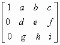
程式會計算出a, b, c, d, e, f, g, h及i的值。
程式需要在 REG Lin 模式下執行，因此在選擇新程式位置後，按 5 1 選用REG Lin模式。
藍色的英文字為統計模式中的變數(maxX 按 shift 2 2 2，maxY 按 shift 2 2 → 2，n 按 Shift 1 3)，FreqOn 按 Shift MODE ← ← 1。
程式(229 bytes)
Freqon: ?→M: ?→X: ?→Y: ?→A: X┘M , Y┘M ; A┘M DT:
For 0→A To 1: X→B: Y→C: M→D: ?→M: ?→X: ?→Y:
X - MmaxX→X: Y - MmaxY→Y: M: ?→M: M - Ans n→M: Next:
If B=0: Then X→B: C + Y→C: D + M→D: IfEnd: If B: Then C┘B→C:
D┘B→D: 1→B: Y - XC→Y: M - XD→M: 0◢ Else maxX◢
Y=0 => M + D→M: Y=0 => C→Y: IfEnd: If Y: Then M┘Y→M:
1→Y: D - CM→D: 0→C◢ Else maxY - maxXCB◢
IfEnd: n - maxXDB - maxYMY◢ B◢ C◢ D◢ 0◢ Y◢ M
例題1: 化簡下列方程組的增廣矩陣及因此解方程
按 Prog 1 再按 1 EXE 1 EXE 1 EXE 6 EXE 1 EXE -1 EXE 2 EXE 5 EXE
1 EXE 3 EXE 1 EXE 10 EXE (顯示0) EXE (顯示0) EXE (顯示1)
EXE (顯示1) EXE (顯示0) EXE (顯示2)
EXE (顯示0) EXE (顯示1) EXE (顯示3)
即化簡增廣矩陣為:
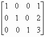
等價方程組為:
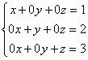
所以方程式的解為 x=1, y=2 及 z=3
例題2: 化簡下列方程組的增廣矩陣及因此解方程
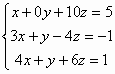
按 Prog 1 再按 1 EXE 0 EXE 10 EXE 5 EXE 3 EXE 1 EXE - 4 EXE -1 EXE
4 EXE 1 EXE 6 EXE 1 EXE (顯示0) EXE (顯示10) EXE (顯示5)
EXE (顯示1) EXE (顯示 - 34) EXE (顯示 -16)
EXE (顯示0) EXE (顯示0) EXE (顯示 -3)
即化簡增廣矩陣為:
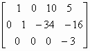
等價方程組為:
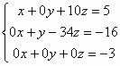
由於 0= - 3表示方程組出現矛盾，所以方程組無解。
例題3: 化簡下列方程組的增廣矩陣及因此解方程
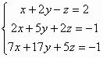
按 Prog 1 再按 1 EXE 2 EXE - 1 EXE 2 EXE 2 EXE 5 EXE 2 EXE -1 EXE
7 EXE 17 EXE 5 EXE - 1 EXE (顯示0) EXE (顯示 -9) EXE (顯示12)
EXE (顯示1) EXE (顯示 4) EXE (顯示 - 5)
EXE (顯示0) EXE (顯示0) EXE (顯示 0)
即化簡增廣矩陣為:
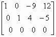
等價方程組為:
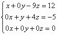
令 z=t，得通解為 x = 12 + 9t, y= - 5 - 4t 及 z = t (無限多組解)
例題4: 化簡下列方程組的增廣矩陣及因此解方程(以k表示)

因常數項包含一個一次未知代數項，可以分兩次執行程式(沒有k及有k常數)求出答案，再將答案整合即可。方程可寫為:
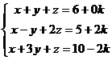
先計算沒有k常數
按 Prog 1 再按 1 EXE 1 EXE 1 EXE 6 EXE 1 EXE -1 EXE 2 EXE 5 EXE
1 EXE 3 EXE 1 EXE 10 EXE (顯示0) EXE (顯示0) EXE (顯示1)
EXE (顯示1) EXE (顯示0) EXE (顯示2)
EXE (顯示0) EXE (顯示1) EXE (顯示3)
再計算有k常數
按 Prog 1 再按 1 EXE 1 EXE 1 EXE 0 EXE 1 EXE -1 EXE 2 EXE 2 EXE
1 EXE 3 EXE 1 EXE - 2 EXE (顯示0) EXE (顯示0) EXE (顯示1，亦即是 k )
EXE (顯示1) EXE (顯示0) EXE (顯示-1，亦即是 - k )
EXE (顯示0) EXE (顯示1) EXE (顯示0，亦即是 0k )
即化簡增廣矩陣為:
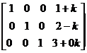
所以方程解為 x = 1 + k, y = 2 - k, z = 3
註1: 程式限制為第一個輸入數值不能等於0，否則會出現Math ERROR。
註2: 例題4分兩次輸入的方法只適用於未知代數出現在常數項(最後的欄內)，若未知代數只出現在其它的欄內(例如: z係數的欄)，方法未必適用，但依然可以將包含未知代數的欄調到取後變成最後的欄，以例題4的方法輸入化簡矩陣，但所求得的矩陣未必是完整解答。
返回 CASIO fx-50FH、fx-3650P II、fx-50FH II及fx-50F PLUS 程式集